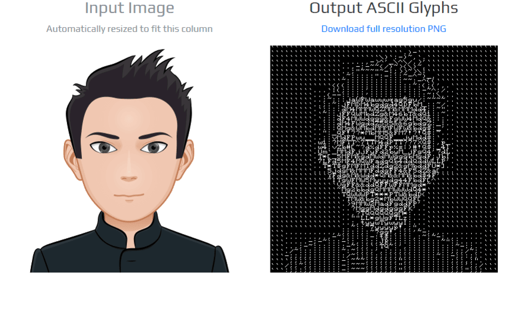

ASCII Art C/C++ Library
A header only, C/C++ library that let you transform an input image or video frame into printable ASCII characters at real-time using a single decision tree.
ASCII Art is a single header, C/C++ library developed by PixLab and based on the work of Nenad Markus that let you transform an input image or video frame into printable ASCII characters at real-time using a single decision tree. Real-time performance is achieved by using pixel intensity comparison inside internal nodes of the tree.
For a live demonstration including tests on static images, Webcam/Camera stream and a general overview on how the algorithm works, please visit art.pixlab.io.
ASCII Camera is now available on Unity Asset Store - assetstore.unity.com/packages/slug/165558
This implementation is based on the paper:
N. Markus, M. Fratarcangeli, I. S. Pandzic and J. Ahlberg, "Fast Rendering of Image Mosaics and ASCII Art", Computer Graphics Forum, 2015, dx.doi.org/10.1111/cgf.12597
Download
Getting Started
Embedding the library in your application is straightforward. All you have to do is drop the ascii_art.c and its accompanying header file in your source tree plus the model that you can download from the link above and perform the following API calls successively:
-
Call
AsciiArtInitfirst to initialize theascii_renderstructure defined in theascii_art.hheader file. -
Prepare the image to be processed by converting it to the grayscale colorspace. You can rely on some external library like OpenCV cvtColor or the built-in
AsciiArtLoadImageinterface. -
Allocate a buffer big enough to hold the entire ASCII text output. The amount of bytes needed is returned via the
AsciiArtTextBufSizeinterface. This step is optional if you do not want a text output but instead a binary ASCII glyphs image. -
Finally, transform the input image into ASCII glyphs/text via
AsciiArtRender.
Below is a simple C program that demonstrates a typical usage of the ASCII Art C/C++ interfaces.
sample.c on Github. Please report any issue or feature request on the Github page.
C/C++ API Reference
This is the C/C++ language interface to ASCII Art. As of this release, only three interfaces are exported plus another optional for straightforward integration.
void AsciiArtInit(ascii_render *pRender)
Description
Initialize and prepare the ascii_render structure. This routine is often the first API call that an application makes and is a prerequisite in order to work with the ASCII Art library.
Parameters
ascii_render *pRender
A pointer to a stack or heap allocated ascii_render structure defined in the header file of the library.
unsigned int AsciiArtTextBufSize(ascii_render *pRender, int img_width, int img_height)
Description
Calculate the amount of bytes needed to hold the entire ASCII text output of the input image.
Parameters
ascii_render *pRender |
A pointer to an already initialized |
int img_width |
Width of the input image to be processed. |
int img_height |
Height of the input image to be processed. |
Return Type
Amount of bytes needed to hold the entire buffer that can be safely passed to a memory allocation routine such as malloc().
void AsciiArtRender(ascii_render *pRender, unsigned char *zPixels /*IN/OUT*/, int *pnWidth /*IN/OUT*/, int *pnHeight /*IN/OUT*/, unsigned char *zBuf/* Optional/OUT */, int Optimize)
Description
Transform an input grayscaled image into ASCII Art.
Parameters
ascii_render *pRender |
A pointer to an already initialized |
unsigned char *zPixels IN/OUT |
A pointer to a writable memory buffer holding the raw pixels of the input image. The pixels must be in the grayscale colorspace where each byte corresponds to a shade of gray (usually a value between 0 and 255). If you are working with OpenCV, then
cvtColor(src, bwsrc, cv::COLOR_RGB2GRAY) should produce grayscale image suitable for this routine. When done, the grayscale pixels are converted to ASCII glyphs in-place which mean that the input buffer must be writable. The built-in |
int *pnWidth IN/OUT |
A pointer to an integer holding the width of the input image to be processed. |
int *pnHeight IN/OUT |
A pointer to an integer holding the height of the input image to be processed. |
unsigned char *zBuf Optional/OUT |
When set, the text output (i.e. printable ASCII characters) of the input image is written into this buffer. The buffer must be large enough to hold the entire text output. Call AsciiArtTextBufSize before to get the amount of bytes needed. |
int Optimize |
If non zero, perform some contrast enhancing preprocessing on the input grayscale image which is based on the adaptive histogram equalization technique. If set, this operation is CPU intensive. |
unsigned char * AsciiArtLoadImage(const char *zPath, int *pWidth, int *pHeight)
Description
Loads an image from a file, convert it to the grayscale colorspace. Where done, the returned memory buffer can be passed directly to AsciiArtRender. This interface is available only if the library is compiled with the ART_ENABLE_STB_IMAGE compile-time directive.
const char *zPath |
Path to the target image to be processed. As of this release, the following format are supported: PNG, JPEG, PGM, PPM, BMP. |
int *pWidth OUT |
The width of the target image is written into this pointer. |
int *pHeight IN/OUT |
The height of the target image is written into this pointer. |
Return Value
A pointer to a writable buffer holding the raw grayscaled pixels of the target image that can be safely passed to AsciiArtRender for processing. When done, this buffer must be freed using the free() interface from the standard C library to avoid memory leaks. NULL is returned on failure.
Related Projects
You may find useful the following open source*, production-ready products developed & maintained by PixLab | Symisc Systems:
- Tiny Dream - Embedded, Stable Diffusion Inference in pure C++.
- SOD - An Embedded, Dependency-Free, Computer Vision C/C++ Library.
- UnQLite - An Embedded, Transactional Key/Value Database Engine.